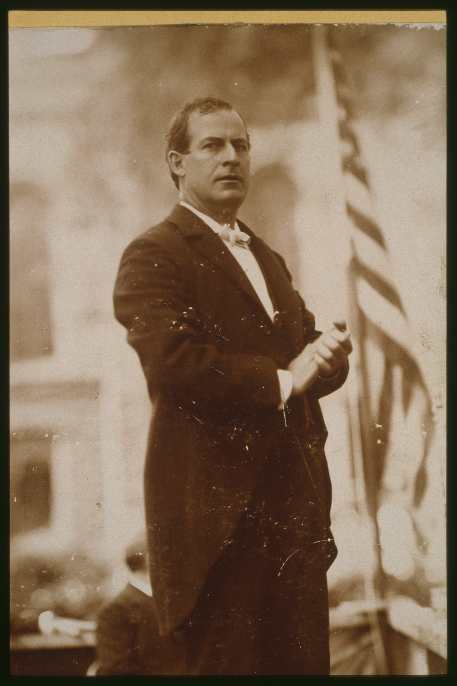

<template id="scene-03-grocer-son-template">
  <div data-composition-id="scene-03-grocer-son" data-width="1920" data-height="1080" style="position:absolute; top:0; left:0; width:1920px; height:1080px; overflow:hidden; background-color:#0E0B08;">
    <style>
      @font-face {
        font-family: "Source Serif 4";
        src: url("../assets/fonts/SourceSerif4-Regular.woff2") format("woff2");
        font-weight: 400; font-style: normal;
      }
      @font-face {
        font-family: "Playfair Display";
        src: url("../assets/fonts/PlayfairDisplay-Bold.woff2") format("woff2");
        font-weight: 700; font-style: normal;
      }
      @font-face {
        font-family: "Playfair Display";
        src: url("../assets/fonts/PlayfairDisplay-Black.woff2") format("woff2");
        font-weight: 900; font-style: normal;
      }
      @font-face {
        font-family: "Roboto Mono";
        src: url("../assets/fonts/RobotoMono-Regular.woff2") format("woff2");
        font-weight: 400 700; font-style: normal;
      }
      .s3-stage {
        position: absolute; inset: 0;
        background-color: #0E0B08;
        font-family: "Source Serif 4", serif;
        color: #E8DEC8;
        overflow: hidden;
      }

      /* ─── PHASE 1: BIRTH NAME + DATE STAMP ─── */
      /* Tightened layout: title at y=120, larger photo (840×500), italic at 30px */
      #s3-name {
        position: absolute;
        top: 120px; left: 0;
        width: 100%; text-align: center;
        font-family: "Playfair Display", serif;
        font-weight: 900; font-size: 128px;
        line-height: 0.95; letter-spacing: -0.025em;
        color: #E8DEC8; opacity: 0; z-index: 11;
      }
      #s3-name .accent { color: #C87533; }

      #s3-birth-stamp {
        position: absolute;
        top: 280px; left: 0;
        width: 100%; text-align: center;
        font-family: "Roboto Mono", monospace;
        font-size: 36px; letter-spacing: 0.5em;
        text-transform: uppercase;
        color: #C87533; opacity: 0; z-index: 11;
      }

      #s3-birthplace-img {
        position: absolute;
        top: 360px;
        left: 50%;
        /* M9: no CSS transform — GSAP centers via xPercent in tweens.
           M10: photo bottom = 360+460 = 820 (caption safe-zone respected). */
        width: 800px; height: 460px;
        object-fit: cover;
        opacity: 0; z-index: 5;
        filter: sepia(0.3) contrast(1.05) brightness(0.88) saturate(0.8);
        box-shadow: 0 20px 60px rgba(0,0,0,0.5);
        border: 1px solid #3A2E20;
      }
      #s3-birthplace-cap {
        position: absolute;
        top: 845px; left: 0;
        width: 100%; text-align: center;
        font-family: "Source Serif 4", serif;
        font-style: italic; font-size: 28px;
        color: #E8DEC8; opacity: 0; z-index: 6;
      }
      #s3-birthplace-cap .accent { color: #C87533; }

      /* Move-to-Cleveland transition card */
      #s3-cleveland-stamp {
        position: absolute;
        top: 380px; left: 0;
        width: 100%; text-align: center;
        font-family: "Playfair Display", serif;
        font-weight: 900; font-size: 96px;
        letter-spacing: -0.02em;
        color: #E8DEC8; opacity: 0; z-index: 12;
      }
      #s3-cleveland-stamp .year {
        display: block;
        font-family: "Roboto Mono", monospace;
        font-weight: 500; font-size: 28px;
        letter-spacing: 0.5em;
        color: #C87533;
        margin-bottom: 22px;
      }

      /* ─── SAFE-ZONE BOUNDARY ───
         Caption strip lives at y=950-1050 (bottom: 32px + ~80px height).
         M10: text/imagery must NOT cross y=880.
         All full-bleed images use height: 880px (object-fit: cover) so they
         crop above the caption zone and never bleed behind text. */

      #s3-cleveland-img {
        position: absolute;
        top: 0; left: 0;
        width: 100%; height: 880px;  /* respects caption safe-zone (y<880) */
        object-fit: cover;
        opacity: 0; z-index: 3;
        filter: sepia(0.4) contrast(1.0) brightness(0.55) saturate(0.7);
      }

      /* ─── PHASE 2: ROCKEFELLER ORBIT (2-pane) ─── */
      #s3-orbit {
        position: absolute; top: 0; left: 0;
        width: 100%; height: 100%;
        z-index: 12; opacity: 0;
      }
      .s3-orbit-side {
        position: absolute; top: 200px;
        width: 760px; height: 760px;
        opacity: 0;
      }
      .s3-orbit-side.left  { left: 120px; }
      .s3-orbit-side.right { right: 120px; }

      .s3-orbit-portrait {
        width: 480px; height: 480px;
        object-fit: cover;
        margin: 0 auto;
        display: block;
        filter: sepia(0.25) contrast(1.05) brightness(0.92);
        border: 2px solid #C87533;
        box-shadow: 0 20px 60px rgba(0,0,0,0.6);
      }
      .s3-orbit-name {
        margin-top: 36px;
        font-family: "Playfair Display", serif;
        font-weight: 900; font-size: 56px;
        letter-spacing: -0.02em;
        text-align: center;
        color: #E8DEC8;
      }
      .s3-orbit-tag {
        margin-top: 14px;
        font-family: "Roboto Mono", monospace;
        font-size: 24px; letter-spacing: 0.25em;
        text-transform: uppercase; text-align: center;
        color: #9A8E76;
      }

      #s3-orbit-link {
        position: absolute;
        top: 540px; left: 50%;
        /* M9: no CSS transform — GSAP centers via xPercent in tweens.
           Color iteration log (MACI Verifier+Challenger):
             v1: #C03A2C harsh red — hurt user's eyes
             v2: #C87533 warm orange — blended with sepia portrait color family
             v3: #E8DEC8 cream — flattened hierarchy with portrait name labels
             v4 (this): #D4B679 champagne — echoes gold portrait borders,
                        distinct from cream name labels, connector-not-peer */
        font-family: "Playfair Display", serif;
        font-style: italic; font-size: 56px;
        color: #D4B679;
        text-align: center;
        text-shadow: 0 0 20px rgba(212, 182, 121, 0.25);
        opacity: 0;
        z-index: 13;
      }

      /* The $250K Chekhov payoff card */
      #s3-check {
        position: absolute;
        top: 380px; left: 50%;
        transform: translateX(-50%);
        width: 1000px;
        padding: 28px 56px;
        text-align: center;
        font-family: "Roboto Mono", monospace;
        font-size: 22px; letter-spacing: 0.18em;
        text-transform: uppercase;
        color: #9A8E76;
        border-top: 1px solid #C87533;
        border-bottom: 1px solid #C87533;
        background: rgba(14, 11, 8, 0.92);
        opacity: 0; z-index: 14;
      }
      #s3-check .amount {
        display: block;
        margin-top: 18px;
        font-family: "Playfair Display", serif;
        font-weight: 900; font-size: 96px;
        letter-spacing: -0.02em;
        color: #C87533;
        text-transform: none;
      }
      #s3-check .when {
        display: block;
        margin-top: 14px;
        font-style: italic; font-size: 22px;
        color: #E8DEC8;
        font-family: "Source Serif 4", serif;
        text-transform: none;
        letter-spacing: 0.05em;
      }

      /* ─── PHASE 3: BUSINESS RISE (typewriter ledger) ─── */
      #s3-rise {
        position: absolute; top: 240px; left: 96px;
        width: 1728px; height: 600px;
        z-index: 11; opacity: 0;
      }
      .s3-rise-row {
        display: grid;
        grid-template-columns: 220px 1fr;
        align-items: baseline;
        gap: 40px;
        padding: 18px 0;
        border-bottom: 1px solid #3A2E20;
        opacity: 0;
      }
      .s3-rise-row .when {
        font-family: "Roboto Mono", monospace;
        font-size: 28px; letter-spacing: 0.15em;
        color: #C87533;
        text-transform: uppercase;
      }
      .s3-rise-row .what {
        font-family: "Playfair Display", serif;
        font-weight: 700; font-size: 42px;
        line-height: 1.15;
        color: #E8DEC8;
      }
      .s3-rise-row .what .accent {
        color: #C87533;
        font-style: italic;
      }

      #s3-firm-name {
        position: absolute;
        top: 420px; left: 0;
        /* Lands on clean frame after ledger exits — vertically centered */
        width: 100%; text-align: center;
        font-family: "Playfair Display", serif;
        font-weight: 900; font-size: 128px;
        letter-spacing: -0.02em;
        color: #C87533;
        opacity: 0; z-index: 13;
      }
      #s3-firm-when {
        position: absolute;
        top: 600px; left: 0;
        width: 100%; text-align: center;
        font-family: "Roboto Mono", monospace;
        font-size: 28px; letter-spacing: 0.5em;
        color: #9A8E76; text-transform: uppercase;
        opacity: 0; z-index: 13;
      }

      /* ─── PHASE 4: THE INVENTORY (1880 — what he owned) ─── */
      #s3-inventory {
        position: absolute; top: 200px; left: 96px;
        width: 1728px; height: 760px;
        z-index: 11; opacity: 0;
      }
      .s3-inv-header {
        text-align: center;
        font-family: "Roboto Mono", monospace;
        font-size: 24px; letter-spacing: 0.5em;
        color: #9A8E76; text-transform: uppercase;
        margin-bottom: 14px;
        opacity: 0;
      }
      .s3-inv-headline {
        text-align: center;
        font-family: "Playfair Display", serif;
        font-weight: 900; font-size: 96px;
        letter-spacing: -0.02em;
        color: #E8DEC8;
        margin-bottom: 50px;
        opacity: 0;
      }
      .s3-inv-headline .num { color: #C87533; }
      #s3-inv-grid {
        display: grid;
        grid-template-columns: repeat(3, 1fr);
        gap: 36px;
      }
      .s3-inv-item {
        opacity: 0;
        text-align: center;
        padding: 24px 16px;
        border-top: 1px solid #C87533;
      }
      .s3-inv-item .label {
        font-family: "Roboto Mono", monospace;
        font-size: 24px; letter-spacing: 0.2em;
        text-transform: uppercase;
        color: #9A8E76;
        margin-bottom: 14px;
      }
      .s3-inv-item .what {
        font-family: "Playfair Display", serif;
        font-weight: 700; font-size: 36px;
        line-height: 1.2;
        color: #E8DEC8;
      }

      #s3-city-line {
        position: absolute;
        bottom: 110px; left: 0;
        width: 100%; text-align: center;
        font-family: "Playfair Display", serif;
        font-weight: 900; font-style: italic;
        font-size: 96px;
        letter-spacing: -0.015em;
        color: #C87533;
        opacity: 0; z-index: 13;
      }

      /* ─── PHASE 5: THESIS — "auctioned off / organized from the top" ─── */
      #s3-thesis {
        position: absolute; top: 320px; left: 96px;
        width: 1728px; text-align: center;
        font-family: "Playfair Display", serif;
        font-weight: 700; font-size: 72px;
        line-height: 1.25; letter-spacing: -0.015em;
        color: #E8DEC8;
        opacity: 0; z-index: 13;
      }
      #s3-thesis .strike {
        color: #C03A2C;
        font-style: italic;
      }
      #s3-thesis .accent {
        color: #C87533;
        font-style: italic;
      }
      #s3-thesis .line {
        display: block;
        margin-top: 22px;
        opacity: 0;
      }

      /* ─── PHASE 6: BRYAN TIME-BOMB ─── */
      /* All text positioned above caption safe-zone (y<880) per M10 */
      #s3-bryan-stage {
        position: absolute; top: 0; left: 0;
        width: 100%; height: 100%;
        z-index: 12; opacity: 0;
      }
      #s3-bryan-portrait {
        position: absolute;
        top: 100px; left: 50%;
        /* M9: no CSS transform — GSAP centers via xPercent in tweens */
        width: 380px; height: 500px;
        object-fit: cover;
        opacity: 0;
        filter: sepia(0.3) contrast(1.05) brightness(0.85);
        border: 2px solid #C87533;
        box-shadow: 0 20px 60px rgba(0,0,0,0.6);
      }
      #s3-bryan-meta {
        position: absolute;
        top: 640px; left: 0;
        width: 100%; text-align: center;
        font-family: "Roboto Mono", monospace;
        font-size: 22px; letter-spacing: 0.3em;
        text-transform: uppercase;
        color: #C87533;
        opacity: 0;
      }
      #s3-bryan-name {
        position: absolute;
        top: 690px; left: 0;
        width: 100%; text-align: center;
        font-family: "Playfair Display", serif;
        font-weight: 900; font-size: 56px;
        letter-spacing: -0.02em;
        color: #E8DEC8;
        opacity: 0;
      }
      #s3-bryan-warning {
        position: absolute;
        top: 820px; left: 96px;
        /* Gap from name (top:690 + 64px font ≈ bottom y=760) widened to ~60px breathing room.
           top:820 + ~30px font + line-height 1.35 = bottom y≈878 (R1: stays under safe-zone y=880). */
        width: 1728px; text-align: center;
        font-family: "Source Serif 4", serif;
        font-style: italic; font-size: 28px;
        line-height: 1.35;
        color: #9A8E76;
        opacity: 0;
      }
      #s3-bryan-warning .accent { color: #C87533; font-weight: 700; font-style: normal; }
    </style>

    <div class="s3-stage">

      <!-- Phase 1: Birth name + date stamp + birthplace -->
      <div id="s3-name">
        <span class="accent">Marcus Alonzo</span> Hanna
      </div>
      <div id="s3-birth-stamp">Born &#160;·&#160; 1837 &#160;·&#160; New Lisbon, Ohio</div>
      
      <div id="s3-birthplace-cap">Father ran a country store.</div>

      <!-- 1853 Cleveland transition -->
      
      <div id="s3-cleveland-stamp">
        <span class="year">1853</span>
        Cleveland.
      </div>

      <!-- Phase 2: Rockefeller orbit (2-pane) + $250K Chekhov -->
      <div id="s3-orbit">
        <div class="s3-orbit-side left">
          
          <div class="s3-orbit-name">Mark Hanna</div>
          <div class="s3-orbit-tag">Cleveland Central High</div>
        </div>
        <div id="s3-orbit-link">— Cleveland, 1853 —</div>
        <div class="s3-orbit-side right">
          
          <div class="s3-orbit-name">John D. Rockefeller</div>
          <div class="s3-orbit-tag">future founder, Standard Oil</div>
        </div>
      </div>

      <div id="s3-check">
        Forty-three years later
        <span class="amount">$250,000</span>
        <span class="when">Rockefeller's check to Hanna</span>
      </div>

      <!-- Phase 3: Business rise ledger -->
      <div id="s3-rise">
        <div class="s3-rise-row" data-row="1">
          <div class="when">After 1865</div>
          <div class="what">Ran his father's <span class="accent">wholesale grocery</span> firm.</div>
        </div>
        <div class="s3-rise-row" data-row="2">
          <div class="when">Then</div>
          <div class="what">Married into <span class="accent">iron</span>.</div>
        </div>
        <div class="s3-rise-row" data-row="3">
          <div class="when">Father-in-law</div>
          <div class="what">Owned one of the largest <span class="accent">coal-and-iron</span> operations on the Great Lakes.</div>
        </div>
        <div class="s3-rise-row" data-row="4">
          <div class="when">Within years</div>
          <div class="what">Hanna <span class="accent">ran it</span>. Boats, docks, foundry contracts.</div>
        </div>
      </div>
      <div id="s3-firm-name">M. A. HANNA &amp; CO.</div>
      <div id="s3-firm-when">By 1885</div>

      <!-- Phase 4: 1880 inventory (9 corporations) -->
      <div id="s3-inventory">
        <div class="s3-inv-header">By 1880</div>
        <div class="s3-inv-headline">
          On the boards of <span class="num">9</span> corporations.
        </div>
        <div id="s3-inv-grid">
          <div class="s3-inv-item" data-inv="1">
            <div class="label">Owned</div>
            <div class="what">The boats moving iron ore down from Lake Superior.</div>
          </div>
          <div class="s3-inv-item" data-inv="2">
            <div class="label">Owned</div>
            <div class="what">The docks where they unloaded.</div>
          </div>
          <div class="s3-inv-item" data-inv="3">
            <div class="label">Owned</div>
            <div class="what">The rail spurs to the foundries.</div>
          </div>
          <div class="s3-inv-item" data-inv="4">
            <div class="label">Had</div>
            <div class="what">A private rail car.</div>
          </div>
          <div class="s3-inv-item" data-inv="5">
            <div class="label">Had</div>
            <div class="what">A winter house in Georgia.</div>
          </div>
          <div class="s3-inv-item" data-inv="6">
            <div class="label">Had</div>
            <div class="what">The board seats. The contracts.</div>
          </div>
        </div>
      </div>
      <div id="s3-city-line">A city to himself.</div>

      <!-- Phase 5: Thesis — auctioned off / from the top -->
      <div id="s3-thesis">
        <span class="line">By 1880, the federal government was being</span>
        <span class="line"><span class="strike">auctioned off in pieces.</span></span>
        <span class="line">It could not last,</span>
        <span class="line">unless someone <span class="accent">organized it from the top.</span></span>
      </div>

      <!-- Phase 6: Bryan time-bomb -->
      <div id="s3-bryan-stage">
        
        <div id="s3-bryan-meta">36 years old &#160;·&#160; Nebraska &#160;·&#160; Populist lawyer</div>
        <div id="s3-bryan-name">William Jennings Bryan</div>
        <div id="s3-bryan-warning">Sharpening the speech that would, <span class="accent">16 years later</span>, force Hanna to invent the modern campaign in four months flat.</div>
      </div>
    </div>

    <script>
      window.__timelines = window.__timelines || {};
      const tl = gsap.timeline({ paused: true });

      // ═════════════════════════════════════════════════════════════════
      // BEAT MAP — section 03 grocer's son (102.6s)
      // Scene-relative time (parent root: 99.0s offset added by HF runtime)
      // ═════════════════════════════════════════════════════════════════
      // Word anchors verified against new master transcript:
      //  +0.0s   "Marcus Alonzo Hanna was born"           — NAME REVEAL
      //  +1.5s   "1837"                                    — DATE STAMP lands
      //  +2.58s  "New Lisbon, Ohio"                        — birthplace tag
      //  +5.06s  "His father ran a country store"          — birthplace caption
      //  +6.20s  "1853"                                    — CLEVELAND stamp
      //  +7.74s  "the family moved to Cleveland"
      //  +9.36s  "Cleveland Central High School"           — ROCKEFELLER ORBIT in
      // +14.65s  "John D. Rockefeller"                     — Rockefeller portrait lands
      // +17.66s  "Standard Oil"                            — orbit tag
      // +19.80s  "control nine of every ten gallons"
      // +25.0s   "They sat in the same room. They walked the same halls."
      // +26.24s  "43 years later"                          — Chekhov payoff card
      // +29.26s  "$250,000"                                — amount lands
      // +31.0s   "Hanna left college"                      — orbit exit, RISE in
      // +34.5s   "wholesale grocery"                       — rise row 1
      // +41.20s  "By the end of the Civil War"             — rise row context
      // +43.43s  "married into iron"                       — rise row 2
      // +48.80s  "Great Lakes"                             — rise row 3
      // +54.12s  "1885 the company carried his name"       — M.A. HANNA & CO firm-name
      // +55.66s  "By 1885 the company carried his name"
      // +56.87s  "By 1880"                                 — INVENTORY in
      // +59.85s  "on the board of nine corporations"
      // +62.49s  "Lake Superior ranges"
      // +68.90s  "private rail car"
      // +70.55s  "winter house in Georgia"
      // +72.20s  "He had a city to himself"                — city line lands
      // +73.96s  "By 1880, judging from the men he hired"
      // +80.43s  "auctioned off in pieces"                 — THESIS
      // +84.90s  "organized it from the top"
      // +88.85s  "in the cornfields of Nebraska"           — BRYAN time-bomb in
      // +89.66s  "Nebraska"
      // +90.32s  "36 year old populist lawyer"
      // +92.80s  "William Jennings Bryan"
      // +96.60s  "16 years later"
      // +100.78s "four months flat"                        — close (cut to s04)
      // ═════════════════════════════════════════════════════════════════

      // ─── PHASE 1: BIRTH (0–8s) ───
      tl.fromTo("#s3-name",
        { opacity: 0, y: 40 },
        { opacity: 1, y: 0, duration: 0.9, ease: "power3.out" },
        0.3
      );
      tl.fromTo("#s3-birth-stamp",
        { opacity: 0, letterSpacing: "0.8em" },
        { opacity: 1, letterSpacing: "0.5em", duration: 0.9, ease: "power2.out" },
        1.4
      );
      // Slow ken-burns push on birthplace photo
      // M9 fix: xPercent:-50 inside the tween provides centering (CSS transform stripped)
      tl.fromTo("#s3-birthplace-img",
        { opacity: 0, xPercent: -50, scale: 1.0 },
        { opacity: 1, xPercent: -50, scale: 1.0, duration: 1.0, ease: "power2.out" },
        1.6
      );
      tl.to("#s3-birthplace-img", { xPercent: -50, scale: 1.05, duration: 4.0, ease: "none", overwrite: "auto" }, 2.6);
      tl.fromTo("#s3-birthplace-cap",
        { opacity: 0, y: 12 },
        { opacity: 1, y: 0, duration: 0.7, ease: "power3.out" },
        4.6
      );

      // Exit phase 1 at ~6.0s (BEFORE Cleveland stamp fires at 6.4s)
      tl.to(["#s3-name", "#s3-birth-stamp", "#s3-birthplace-img", "#s3-birthplace-cap"],
        { opacity: 0, duration: 0.5, ease: "power2.in", overwrite: "auto" },
        6.0
      );
      tl.set(["#s3-name", "#s3-birth-stamp", "#s3-birthplace-img", "#s3-birthplace-cap"],
        { visibility: "hidden" }, 6.6
      );

      // ─── PHASE 1B: 1853 CLEVELAND (6.5–9.5s) ───
      tl.fromTo("#s3-cleveland-img",
        { opacity: 0, scale: 1.05 },
        { opacity: 0.55, scale: 1.0, duration: 1.0, ease: "power2.out" },
        6.6
      );
      tl.to("#s3-cleveland-img", { scale: 1.08, duration: 3.0, ease: "none", overwrite: "auto" }, 7.6);
      tl.fromTo("#s3-cleveland-stamp",
        { opacity: 0, y: 30 },
        { opacity: 1, y: 0, duration: 0.8, ease: "power3.out" },
        6.8
      );

      // Hold cleveland stamp briefly, exit before orbit
      tl.to(["#s3-cleveland-img", "#s3-cleveland-stamp"],
        { opacity: 0, duration: 0.6, ease: "power2.in", overwrite: "auto" },
        9.0
      );
      tl.set(["#s3-cleveland-img", "#s3-cleveland-stamp"], { visibility: "hidden" }, 9.7);

      // ─── PHASE 2: ROCKEFELLER ORBIT (9.5–30s) ───
      tl.set("#s3-orbit", { opacity: 1, visibility: "visible" }, 9.4);

      // Hanna left, Rockefeller right — staggered entry
      tl.fromTo(".s3-orbit-side.left",
        { opacity: 0, x: -60 },
        { opacity: 1, x: 0, duration: 0.9, ease: "power3.out" },
        9.5
      );
      tl.fromTo(".s3-orbit-side.right",
        { opacity: 0, x: 60 },
        { opacity: 1, x: 0, duration: 0.9, ease: "power3.out" },
        14.6
      );
      // Italic link "same room, same halls" lands on the actual phrase
      tl.fromTo("#s3-orbit-link",
        { opacity: 0, xPercent: -50, scale: 0.92 },
        { opacity: 1, xPercent: -50, scale: 1, duration: 0.6, ease: "power2.out" },
        24.5
      );
      // Exit orbit-link BEFORE check rises (no overlap)
      tl.to("#s3-orbit-link", { opacity: 0, xPercent: -50, duration: 0.4, ease: "power2.in", overwrite: "auto" }, 25.5);
      tl.set("#s3-orbit-link", { visibility: "hidden" }, 25.95);

      // The Chekhov $250K check lands at +26.24s ("43 years later")
      // Dim the portraits + tags so the check is the focus (visual hierarchy)
      tl.to(['.s3-orbit-side', '#s3-orbit-link'],
        { opacity: 0.22, scale: 0.92, duration: 0.6, ease: "power2.out" },
        25.7
      );
      tl.fromTo("#s3-check",
        { opacity: 0, y: 30 },
        { opacity: 1, y: 0, duration: 0.8, ease: "power3.out" },
        25.9
      );

      // Orbit + check exit ~30.5s
      tl.to("#s3-orbit", { opacity: 0, duration: 0.6, ease: "power2.in", overwrite: "auto" }, 30.5);
      tl.to("#s3-check", { opacity: 0, duration: 0.6, ease: "power2.in", overwrite: "auto" }, 30.5);
      tl.set(["#s3-orbit", "#s3-check"], { visibility: "hidden" }, 31.2);

      // ─── PHASE 3: BUSINESS RISE LEDGER (31–56s) ───
      tl.set("#s3-rise", { opacity: 1, visibility: "visible" }, 31.0);

      // Row 1: wholesale grocery (~+34.5s)
      tl.fromTo('.s3-rise-row[data-row="1"]',
        { opacity: 0, x: -30 },
        { opacity: 1, x: 0, duration: 0.7, ease: "power3.out" },
        33.5
      );
      // Row 2: married into iron (~+43.4s)
      tl.fromTo('.s3-rise-row[data-row="2"]',
        { opacity: 0, x: -30 },
        { opacity: 1, x: 0, duration: 0.7, ease: "power3.out" },
        42.5
      );
      // Row 3: Great Lakes (~+48.8s)
      tl.fromTo('.s3-rise-row[data-row="3"]',
        { opacity: 0, x: -30 },
        { opacity: 1, x: 0, duration: 0.7, ease: "power3.out" },
        46.0
      );
      // Row 4: ran it (~+50s)
      tl.fromTo('.s3-rise-row[data-row="4"]',
        { opacity: 0, x: -30 },
        { opacity: 1, x: 0, duration: 0.7, ease: "power3.out" },
        50.0
      );

      // ─── Ledger EXITS first (53.0–54.0s) — clean frame for firm-name reveal ───
      tl.to("#s3-rise",
        { opacity: 0, duration: 0.7, ease: "power2.in", overwrite: "auto" },
        53.0
      );
      tl.set("#s3-rise", { visibility: "hidden" }, 53.9);

      // Firm name lands ON the audio anchor +54.12s ("1885 carried his name")
      tl.fromTo("#s3-firm-name",
        { opacity: 0, scale: 0.92, letterSpacing: "0.05em" },
        { opacity: 1, scale: 1, letterSpacing: "-0.02em", duration: 0.9, ease: "expo.out" },
        54.0
      );
      tl.fromTo("#s3-firm-when",
        { opacity: 0 },
        { opacity: 1, duration: 0.6, ease: "power2.out" },
        54.9
      );

      // Phase 3 exit at ~56s
      tl.to(["#s3-firm-name", "#s3-firm-when"],
        { opacity: 0, duration: 0.6, ease: "power2.in", overwrite: "auto" },
        56.3
      );
      tl.set(["#s3-rise", "#s3-firm-name", "#s3-firm-when"], { visibility: "hidden" }, 57.0);

      // ─── PHASE 4: 1880 INVENTORY (57–74s) ───
      tl.set("#s3-inventory", { opacity: 1, visibility: "visible" }, 56.8);

      tl.fromTo(".s3-inv-header",
        { opacity: 0, y: 12 },
        { opacity: 1, y: 0, duration: 0.6, ease: "power3.out" },
        56.9
      );
      tl.fromTo(".s3-inv-headline",
        { opacity: 0, y: 20 },
        { opacity: 1, y: 0, duration: 0.8, ease: "power3.out" },
        57.5
      );

      // Inventory items stagger across "boats / docks / spurs / private car / winter house / city"
      // anchors: 62.49 boats, 68.9 rail car, 70.55 winter house
      tl.fromTo('.s3-inv-item[data-inv="1"]',
        { opacity: 0, y: 24 },
        { opacity: 1, y: 0, duration: 0.6, ease: "power3.out" },
        62.0
      );
      tl.fromTo('.s3-inv-item[data-inv="2"]',
        { opacity: 0, y: 24 },
        { opacity: 1, y: 0, duration: 0.6, ease: "power3.out" },
        64.5
      );
      tl.fromTo('.s3-inv-item[data-inv="3"]',
        { opacity: 0, y: 24 },
        { opacity: 1, y: 0, duration: 0.6, ease: "power3.out" },
        66.5
      );
      tl.fromTo('.s3-inv-item[data-inv="4"]',
        { opacity: 0, y: 24 },
        { opacity: 1, y: 0, duration: 0.6, ease: "power3.out" },
        68.7
      );
      tl.fromTo('.s3-inv-item[data-inv="5"]',
        { opacity: 0, y: 24 },
        { opacity: 1, y: 0, duration: 0.6, ease: "power3.out" },
        70.3
      );
      tl.fromTo('.s3-inv-item[data-inv="6"]',
        { opacity: 0, y: 24 },
        { opacity: 1, y: 0, duration: 0.6, ease: "power3.out" },
        71.5
      );

      // "A city to himself." italic landing at +72.20s
      tl.fromTo("#s3-city-line",
        { opacity: 0, scale: 0.92 },
        { opacity: 1, scale: 1, duration: 0.8, ease: "expo.out" },
        72.0
      );

      // Inventory + city-line exit at ~78s
      tl.to(["#s3-inventory", "#s3-city-line"],
        { opacity: 0, duration: 0.7, ease: "power2.in", overwrite: "auto" },
        77.8
      );
      tl.set(["#s3-inventory", "#s3-city-line"], { visibility: "hidden" }, 78.6);

      // ─── PHASE 5: THESIS (78–88s) ───
      tl.set("#s3-thesis", { opacity: 1, visibility: "visible" }, 78.5);

      // 4 lines staggered at the actual phrasing beats
      tl.fromTo('#s3-thesis .line:nth-child(1)',
        { opacity: 0, y: 16 },
        { opacity: 1, y: 0, duration: 0.6, ease: "power3.out" },
        78.6
      );
      tl.fromTo('#s3-thesis .line:nth-child(2)',
        { opacity: 0, y: 16 },
        { opacity: 1, y: 0, duration: 0.7, ease: "power3.out" },
        80.3
      );
      tl.fromTo('#s3-thesis .line:nth-child(3)',
        { opacity: 0, y: 16 },
        { opacity: 1, y: 0, duration: 0.6, ease: "power3.out" },
        83.0
      );
      tl.fromTo('#s3-thesis .line:nth-child(4)',
        { opacity: 0, y: 16 },
        { opacity: 1, y: 0, duration: 0.7, ease: "power3.out" },
        84.7
      );

      // Thesis exit at ~88s
      tl.to("#s3-thesis", { opacity: 0, duration: 0.6, ease: "power2.in", overwrite: "auto" }, 87.7);
      tl.set("#s3-thesis", { visibility: "hidden" }, 88.4);

      // ─── PHASE 6: BRYAN TIME-BOMB (88–102.6s) ───
      tl.set("#s3-bryan-stage", { opacity: 1, visibility: "visible" }, 88.0);

      // Portrait fades in (+88.85s "cornfields of Nebraska")
      // M9 fix: xPercent:-50 inside the tween (CSS transform stripped)
      tl.fromTo("#s3-bryan-portrait",
        { opacity: 0, xPercent: -50, y: 30, scale: 1.04 },
        { opacity: 1, xPercent: -50, y: 0, scale: 1, duration: 1.2, ease: "power3.out" },
        88.5
      );
      // Slow ken-burns push (preserves xPercent:-50 centering)
      tl.to("#s3-bryan-portrait", { xPercent: -50, scale: 1.04, duration: 12.0, ease: "none", overwrite: "auto" }, 89.7);

      // Meta tag (36 / Nebraska / Populist lawyer) — anchored on +90.3s
      tl.fromTo("#s3-bryan-meta",
        { opacity: 0, y: 12 },
        { opacity: 1, y: 0, duration: 0.7, ease: "power3.out" },
        89.8
      );

      // Name lands at +92.80s on "William Jennings Bryan"
      tl.fromTo("#s3-bryan-name",
        { opacity: 0, y: 16 },
        { opacity: 1, y: 0, duration: 0.8, ease: "power3.out" },
        92.5
      );

      // Warning (16 years later, four months flat) at +96.6s
      tl.fromTo("#s3-bryan-warning",
        { opacity: 0, y: 12 },
        { opacity: 1, y: 0, duration: 0.9, ease: "power3.out" },
        95.5
      );
      // Hold to scene end (102.6s) — exit handled by parent crossfade

      // Scene end: fade Bryan stage out before clip boundary (avoids leak into scene-04)
      tl.to("#s3-bryan-stage", { opacity: 0, duration: 0.6, ease: "power2.in", overwrite: "auto" }, 101.6);
      tl.set("#s3-bryan-stage", { visibility: "hidden", opacity: 0 }, 102.4);

      window.__timelines["scene-03-grocer-son"] = tl;
    </script>
  </div>
</template>
